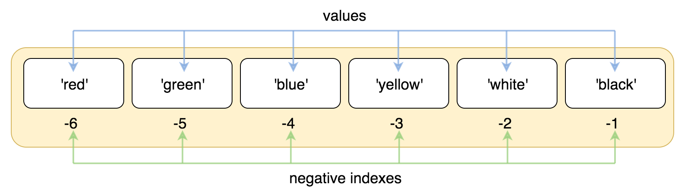
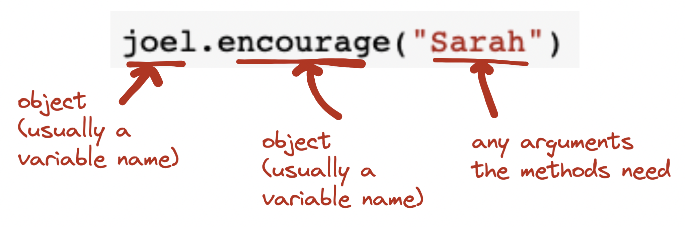

5: Lists#
Learning goals#
Create a list in Python
Do common operations on lists (e.g., appending, indexing, slicing, sorting)
Explain difference between mutable and immutable data structures
Recognize potential application opportunities for collection methods and functions (e.g., len, max, min)
Explain difference between functions and methods
Appropriately apply collection methods and functions to lists
What are lists and why should we care about them?#
A list is a kind of collection data structure#
So far we’ve mostly used a “non-collection” data structures. Most of our variables have one value in them - when we put a new value in the variable, the old value is overwritten
A list is a kind of collection data structure. A collection allows us to put many values into a single “variable”
A collection is nice because we can carry many values around in one convenient package
a_list = []
s = ""
friends = ['Joseph', 'Glenn', 'Sally']
carryon = ['socks', 'shirt', 'perfume']
scores = [1, 50, 32]
friends
['Joseph', 'Glenn', 'Sally']
Why do we need more data structures than strings, numbers and Boolean values?#
Recall that computational thinking is a key component of programming skill. Algorithms — sets of rules or steps used to solve a problem — are an important way to model and instruct computers to solve problems. In computer science, it is well known that some algorithms need special data structures — particular ways of organizing data in a computer.
Consider this problem: Find the smallest number amongst a set of N numbers.
Can you think of a structured set of rules (algorithms) for solving this problem in a reusable way without using a collection / list?
# find the smallest number amongst five numbers
a = 1
b = 5
c = 7
d = 10
e = 2
def find_smallest_among_5(a, b, c, d, e):
smallest = a
if b < smallest:
smallest = b
elif c < smallest:
smallest = c
elif d < smallest:
smallest = d
elif e < smallest:
smallest = e
return smallest
What if we have six numbers? We can’t reuse our function, need to modify to add more parameters and “switches” in our chained conditional.
def find_smallest_among_6(a, b, c, d, e, f):
smallest = a
if b < smallest:
smallest = b
elif c < smallest:
smallest = c
elif d < smallest:
smallest = d
elif e < smallest:
smallest = e
elif f < smallest:
smallest = f
return smallest
What if we have three numbers? Again, can’t reuse our function, need to modify to remove parameters and “switches” in our chained conditional.
# or just 3?
def find_smallest_among_3(a, b, c):
smallest = a
if b < smallest:
smallest = b
elif c < smallest:
smallest = c
return smallest
In contrast, check out what we can do if we have lists as a data structure! This is an elegant function that covers the class of “find smallest among N numbers” problems and can be reused and composed.
# with lists
def find_smallest(l):
# sort the list
l.sort()
# get the first item
return l[0]
l = [4, 5, 7, 10, 2, 10, 15]
find_smallest(l)
2
Again, as you can see, we could in principle solve each variant of the “find smallest” problem with separate variables for each item. But it’s very clunky! And error prone! And basically impossible to generalize (contra core goal of developing abstractions over classes of problems, from CompT).
The point to note here is that your ability to model (and therefore solve) problems with programming is dependent on your knowledge of data structures (since they constrain the set of algorithms you can recognize and apply to problems). So as you expand your knowledge of data structures, try to note down also the common situations in which they apply, and what algorithms they tend to “work well with”.
You will learn a few more data structures this semester (dive more into strings this module, then files and dictionaries next module, and dataframes for data analysis in the final module). And of course many more as you advance in your career.
Here are lists in context of our example problem from last week:
# key variables:
# the input LIST of strings
inputs = [
"hello sarah@umd.edu",
"from: joelchan@umd.edu",
"some other text that doesn't have an email"
]
# a LIST to store the email addresses
emails = []
# Loop over every text input
for text_input in inputs:
# extract an email address
# split the text into subsets
chunks = text_input.split()
# check every chunk
for chunk in chunks:
# check if it has @ and .
if "@" in chunk and "." in chunk:
# put the chunk in the email list
emails.append(chunk)
# give the email address back to the user
print(emails)
['sarah@umd.edu', 'joelchan@umd.edu']
How would you solve this without lists? Or some kind of collection?
Anatomy of a list in Python#
List constants or “literals”:
Are surrounded by square brackets
Contain at least one element in the list; multiple items are separated by commas.
"1, 2, 3" # string
1 # int
1.0 # float
basic_list = [1, 2, 3] # list
another_list = [11,32,53] # the spaces don't matter for Python, only the commas; spaces are for readability for us
another_list = [
"a really long item in the list",
2,
3
]
matrix = [
[0, 1, 2],
[0, 0, 1],
[0, 1, 0]
]
# can also show up like this if you want to see the contents more explicitly
# python knows where the list starts or stops based on the brackets
basic_list_2 = [
1,
2,
3
]
# handy for large items in a list
sentences = [
"something",
"she sells sea shells by the sea here",
"she sells sea shells by the sea there",
]
#sentences = ["she sells sea shells by the sea shore", "she sells sea shells by the sea here", "she sells sea shells by the sea there"]
sentences
['something',
'she sells sea shells by the sea here',
'she sells sea shells by the sea there']
basic_list
[1, 2, 3]
You can assign lists to variables, just like other values, with a variable assignment statement.
a = [1, 2, 3]
b = [1, "2", 3.0]
c = [a, b] # list of lists
print(a)
print(b)
print(c)
d = {"a": 1}
e = [d, a]
e
[1, 2, 3]
[1, '2', 3.0]
[[1, 2, 3], [1, '2', 3.0]]
[{'a': 1}, [1, 2, 3]]
Some properties of lists#
Some properties of lists:
Can hold more than one value
What can go in a list?
Any Python object: even another list!
Mixed objects: doesn’t all have to be the same type of object
But you can also have lists with just one item, or no items! Rarely will this be useful (except to initialize the variable).
Is indexed positionally, and therefore has a notion of position / order
Some other data structures, like dictionaries, don’t have this property
This allows you to do things like sort, find by position (e.g., “first” or “last”)
NOTE: the index starts at 0, not 1! So the first item is at index / position 0, the second at index / position 1, and so on…
Very important to remember this as you work with getting things in and out of lists
Is mutable: you can change the data held by the variable directly. Some other data structures (like strings!) are immutable - you can never directly modify the value held by the variable, you can only create a new modified value that you must then assign to the same or different variable to keep around. Hold this thought to compare/contrast when we discuss strings in a couple weeks.
Let’s demonstrate these properties by “dissecting” a few lists together.
Can hold multiple types of data, including other lists#
basic_list = [1, 2, 3] # list
x = [1, "1", basic_list] # mixed
y = [basic_list, basic_list, basic_list] # list of lists
empty_list = [] # empty list, often used for initialization
list_w_one = [1]
print(x)
print(y)
[1, '1', [1, 2, 3]]
[[1, 2, 3], [1, 2, 3], [1, 2, 3]]
y
[[1, 2, 3], [1, 2, 3], [1, 2, 3]]
Indexing#
REMEMBER: indexing starts at 0
basic_list_3 = [
"red", # psn 0
"green", # psn 1
"blue", # psn 2
"yellow", # psn 3
"white", # psn 4
"black", # psn 5
]
# get the first item
basic_list_3[0]
# get the fourth item
basic_list_3[5]
'black'
Here it is in pictures.

You can also index in reverse! Handy for getting the last item in a list.
{kind=link}
Yes, the alert reader will notice that this reverse indexing starts at… 1. So why does the indexing start at 0? I’m afraid I don’t have a good answer. Maybe it came from the design of the C programming language, and most languages (but not all!! R starts indexing at 1), followed suit.
print(basic_list_3[-1]) # gets you the last item, at position -1
print(basic_list_3[-2]) # gets you the 2nd last item, at position -2
black
white
Mutating (changing) list values directly#
basic_list_4 = [4, 6, 7, 10, 5]
print(basic_list_4)
basic_list_4[1] = 7 # can mutate the list (i.e., modify it directly)
print(basic_list_4)
[4, 6, 7, 10, 5]
[4, 7, 7, 10, 5]
Working with lists#
Make a list#
Can use the assignment statement to initialize to an empty list, or manually specify what’s in a list
x = [1, 2, 3] # list with numbers 1 2 and 3
y = [] # empty list
z = [4, 7]
Can create from existing lists, using concatenation (adding two existing lists together)
new_list = x + z
new_list
[1, 2, 3, 4, 7]
# another way that some people create lists
some_list = list()
some_list
[]
int("3")
3
Get one thing out of a list: Indexing#
Lists are composed of a sequence of slots, each of which has an index. Indexing is a way to get something out of a list at a specific index position. In English, we might say, “get me the 1st item in the list”, or “get me the 3rd item in the list”. In Python, it’s a little bit different, since indices start at 0. So “the first item in the list” in Python would be “the item at index position 0 in the list”.
Here are some examples:
some_list = [3, 4, 5]
print(some_list[0]) # first item
print(some_list[1]) # second item
print(some_list[2]) # third item
3
4
5
A helpful trick for getting the last or nth-to-last item is to start the indexing in reverse. Confusingly, this indexing starts at 1… Sorry!
-1 is last
-2 is second last
and so on…
another_list = [3, 4, 5, 6, 7] # 5 items in this list
print(another_list[3]) # how to get the 4th item?
print(another_list[-1]) # get the last item
print(another_list[-2]) # get the 2nd-to-last item
6
7
6
This reverse indexing can be handy for getting smallest/largest after sorting a list, especially if there are lots of items in the list.
a = [4, 6, 1, 8, 20, 13]
a.sort()
a[-1]
20
Let’s practice some more!
# get the 3rd item
x = [1, 2, 3]
y = ["one", "two", "three"]
print(x[2])
print(y[2])
3
three
# get the first item
print(x[0])
print(y[0])
1
one
Get multiple (contiguous) things out of a list: Slicing#
Slicing is a variation of indexing that grabs more than one value. The colon specifies that you’re slicing.
The first number is where you start. The second number is the upper limit, i.e., up to but not including.
x = [
4, # 0
6, # 1
8, # 2
1, # 3
2, # 4
5 # 5
]
# get the first two items
# print(x[0:2])
# # get the last two items
# print(x[-2:])
# # get the items from the 3rd position onwards (i want to ignore the first two)
print(x[2:])
# # get everything up to the 3rd position (i.e., index 2)
# print(x[:3])
[8, 1, 2, 5]
Let’s practice some more!
# get everything up to the 4th item
x[:4]
[4, 6, 8, 1]
Modify values (“mutate”) in a list#
Use the index to specify which part of the list you want to modify, and assign it a (new) value
x = [4,6,8,1,2,5]
print(x)
print("first item", x[0])
# change the first item to 10
x[0] = 10 # notice how this looks like an assignment statement
print(x)
print("new first item", x[0])
[4, 6, 8, 1, 2, 5]
first item 4
[10, 6, 8, 1, 2, 5]
new first item 10
x = [
4, # 0
6, # 1
8, # 2
1, # 3
2, # 4
5 # 5
]
# how do we modify this list so that the last item has the value 20?
x[5] = 20
# x[-1] = 20 # this is equivalent
x
[4, 6, 8, 1, 2, 20]
Check what’s in a list#
Python provides the in operator that lets you check if an item is in a list.
It’s a logical operator that returns True or False, so you can use it as a logica / Boolean expression, for use with conditionals and so on. You’ll find this to be quite handy: we often want to be lazy and only do something if a list contains a thing we care about!
names = ["joe", "harry", "rachel", "kelly"]
"joel" not in names
# if "joel" in names:
# print("Found!")
# else:
# print("Not found!")
True
List methods and collection functions#
There are a great many other built-in operations in Python that let you do things with lists. They fall into list methods and also built in functions that take a list as an argument.
Collection functions#
Python has built in functions that operate on lists as arguments
len()math ones:
max(),min(),sum()sorted()look for the ones that have an “iterable” as as parameter type here: https://docs.python.org/3/library/functions.html
These are functions, so mechanics are just like functions - function name, pass in list as an input argument, plus whatever other arguments might be needed, and get back some output value
Let’s play with a few!
#
x = [1, 2, 3, 1, 4, 1, 5, 10, 12, 11]
x_length = len(x) # get the length of x
print(x_length)
10
# make a new list that is a sorted version of x. do this if you want to keep the original list around.
x_sorted = sorted(x)
print(x_sorted)
[1, 1, 1, 2, 3, 4, 5, 10, 11, 12]
print(min(x))
print(max(x))
print(sum(x)/len(x)) # average, using sum and len
1
12
5.0
NOTE: you can’t use any of these math-y functions with lists of “not-numbers”. For example, the following code will yield a TypeError:
list_of_strings = [
"she",
"sells",
"seashells",
"by",
"the",
"seashore"
]
sum(list_of_strings)
List methods#
Python lists also have methods.
in Python, methods are like functions that only certain kinds of objects (e.g., list) can do. We’ll see that many of the data structures in Python are like this, including strings in 2 weeks. And you can also create your own objects! You will learn much more about this in 326 - this is “object oriented programming”.
All of the list methods are listed (no pun intended!) here: https://docs.python.org/3/tutorial/datastructures.html
Here are some common examples:
a_list = [1, 2, 3, 1, 4, 1, 5]
print("original list:", a_list)
# add something to the end of a list (WE'LL USE THIS A LOT)
a_list.append(4)
print("\n", a_list, "after appending 4")
# sort the list (WE'LL ALSO USE THIS A LOT)
a_list.sort()
print("\n", a_list, "after sorting")
# control how you sort
a_list.sort(reverse=True)
print("\n", a_list, "after sorting in reverse order")
# count how many times an item is in a list (handy for searching)
print("\nnumber of occurences of 1 in the list:", a_list.count(1)) # how many times does the number 1 show up in this list?
# where is 1 in the list?
print("\n1 is at position", a_list.index(1), "in the list")
# insert an item at a specific position
a_list.insert(3, 22)
print("\n", a_list, "after inserting 22 at the first position")
original list: [1, 2, 3, 1, 4, 1, 5]
[1, 2, 3, 1, 4, 1, 5, 4] after appending 4
[1, 1, 1, 2, 3, 4, 4, 5] after sorting
[5, 4, 4, 3, 2, 1, 1, 1] after sorting in reverse order
number of occurences of 1 in the list: 3
1 is at position 5 in the list
[5, 4, 4, 22, 3, 2, 1, 1, 1] after inserting 22 at the first position
Syntax for (list) methods#
Stepping back for a second, here’s how it works, basically, syntax wise.
nameOfVariable.nameOfMethod(anyArgumentsTheMethodsNeed)
And in pictures:
{kind=link}
Note: unlike functions, list methods change the list itself; they do not return a new value. Like your functions that lack return statements, the return value of list methods is None.
result = a_list.sort()
print(result)
None
If you want to keep the original list instead of modifying it directly, you should use the collection functions (e.g., sorted() instead of list.sort()).
a_list = [5,2,7,10,3]
result = sorted(a_list)
print(a_list)
print(result)
[5, 2, 7, 10, 3]
[2, 3, 5, 7, 10]
Mapping methods/functions to situations#
Let’s practice! Keep these handy, and guess/propose situations where some of these methods/functions will be useful
# finding the smallest/biggest thing
x = [1, 2, 3, 7, 9, 11, 14]
# find the smallest?
min(x) # yes, we didn't actually even need to write our `find_smallest()` function above!
# find the biggest?
max(x)
# sort?
x.sort()
# filtering
def is_odd(n):
return n % 2 != 0
# apply the "is_odd" function to filter all the elements in x, so that we only get items that pass the "is_odd" test
list(filter(is_odd, x))
[1, 3, 7, 9, 11]
Meta-points here
Get in the habit of suspecting that something you want to do probably already has a function/method written for it that you can use (that probably does it well)
Notice the docstrings!
Try a couple more!
Remove “milk” from your grocery list, and add “butter” and “cookies” to the end of your list.
groceries = ["milk", "eggs", "ramen", "juice"]
# remove milk
# add butter
# add cookies
Complete the code for this function to add a new guest to a list of table_guests, but only if there is still room (i.e., length of table guests is under the table limit)
def add_to_table(table_guests, new_guest, table_limit):
# check if the length of table_guests is current less than table_limit
if :
# if so, add the new_guest to the table_guests list
# and return that table_guests list
return
else:
# otherwise, print a message to say that "the table is full!"
# and return the table_guests list as is
return
add_to_table(["joel", "sara", "nehal", "christian"], "wayde", 4)
Complete the code for this function to keep the top n largest numbers in a list of numbers, making sure not to try to return more numbers than actually exist in the list!
def keep_biggest_n(nums, n):
# sort nums
# check if the length of nums is less than the desired n of items
if :
# if so, just return the whole nums list as is
return
else:
# otherwise, return the first n items from the sorted list
return
keep_biggest_n([5, 10, 2, 11, 60, 1000], 10)
Common errors#
Forgetting that indices start at 0#
As I noted earlier, remember that indices start at 0. A common error to make if you forget this, is to get something at the wrong position!
a = [1, 2, 3]
a[1]
2
IndexError#
Another common error is to try to get something from an index position that doesn’t yet exist in a list.
For example, the list x = [1, 4, 5] has 3 items (has length 3).
But! If I want to get the 3rd item with x[3], I will get an IndexError, because the item only has indices that go up to 2!
Sometimes this happens if you forget 0-indexing, and try to get the “3rd item” with index 3 (instead of the correct index 2).
We’ll return to this error next week, because it often shows up with iteration
x = [1, 4, 5]
x[3]
### Mixing up mutable/immutable when using methods/functions
This happens most with operations that can be done wiht methods and functions, such as sorting
```{code-cell} ipython3
x = [1, 7, 4, 2]
xsort = sorted(x) # don't change x, just make a new list that is a sorted version of x
print(x)
print(xsort)
File "/var/folders/xz/_hjc5hsx743dclmg8n5678nc0000gn/T/ipykernel_94327/3285008488.py", line 6
This happens most with operations that can be done wiht methods and functions, such as sorting
^
SyntaxError: invalid syntax
x = [1, 7, 4, 2]
xsort = x.sort() # modify x directly, we don't care if it changes, so it won't return a value and xsort will have None as its value
print(x)
print(xsort)